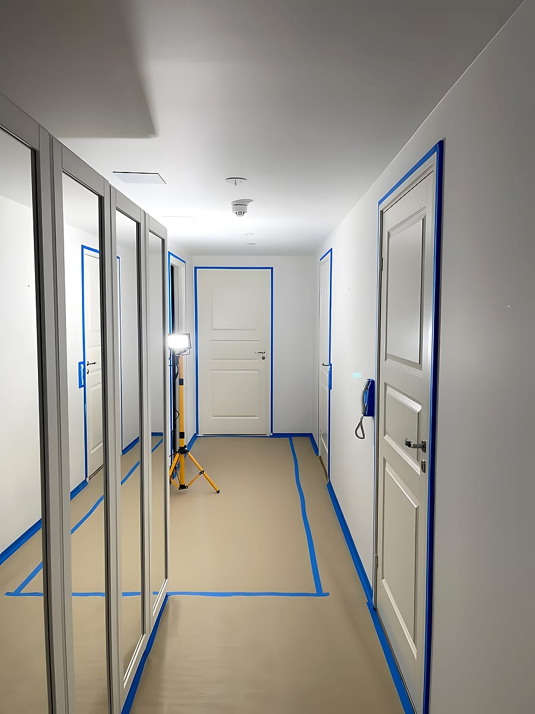
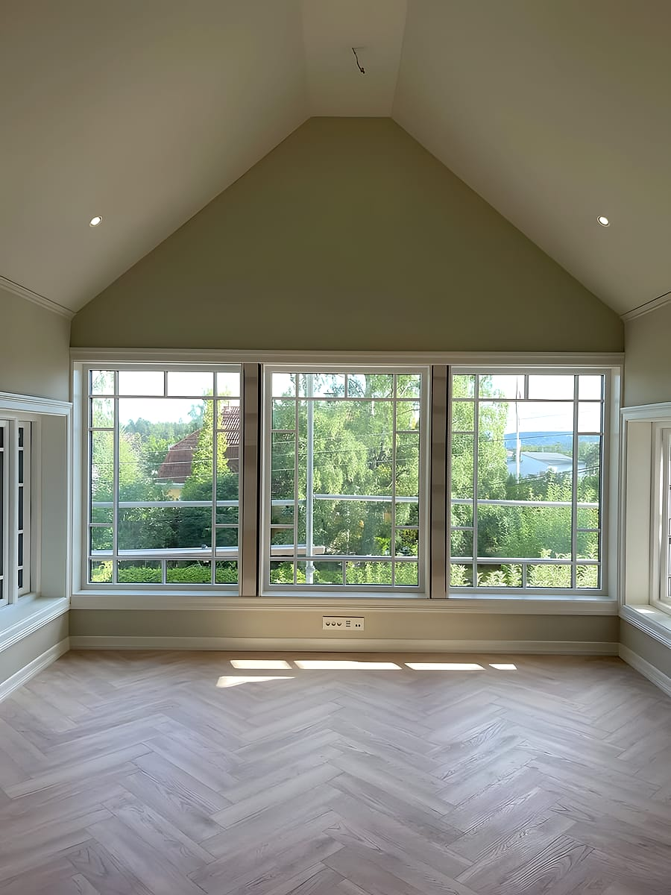
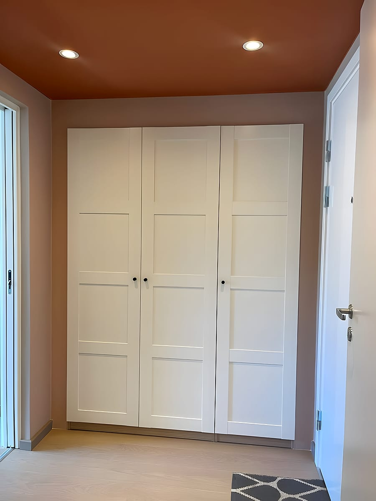
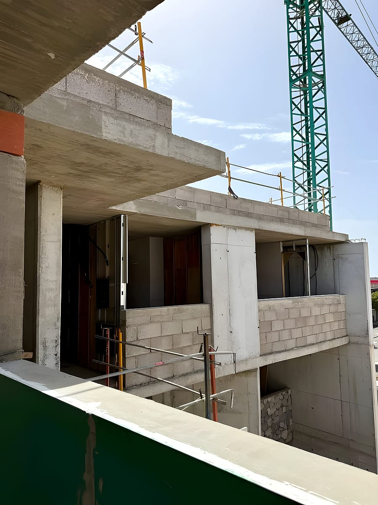

Bygg og oppussing · Gran Canaria
Kvalitet preger hvert prosjekt.
Kvalitet i hver detalj. Engasjement i hvert resultat.
01Acabados e Inversiones J.G.M., S.L.
I Acabados e Inversiones J.G.M., S.L. utfører vi bygg-, oppussings- og rehabiliteringsprosjekter med presisjon, solid håndverk og øye for detaljer.
Vi tilbyr en personlig og nær service, tilpasset hver kundes behov, med profesjonell oppfølging på norsk, spansk og engelsk.

Vårt lokale
Nytt lokale på Gran Canaria
Vi legger siste hånd på oppussingen. Snart kan du stikke innom og fortelle oss om prosjektet ditt.
02Før og etter
Ekte prosjekter, før og etter.
Velg et prosjekt og dra over bildet.


Leilighet ved havet
- Totalrenovering
- Gips
- Overflater


Trefasade Norge
- Utvendig maling


Eksklusiv entré
- Belysning
- Garderobeskap
- Tregulv


Bad
- Flislegging
- Rørlegging
- Kledning


Loftsrom
- Gips
- Maling
- Fiskebeinsparkett


Innebygde skap
- Snekkerarbeid etter mål

03Vår historie
En historie med erfaring og tillit.
Vi har lang erfaring innen bygg og oppussing, med prosjekter innen nybygg, rehabilitering og totalrenovering av boliger, bygninger og hoteller.
Erfaringen vår spenner fra nye bad og kjøkken til fornying av gulv, fasader og interiør, alltid med en arbeidsmetode basert på presisjon, nøye utførte overflater, orden og renhold.
Vi satser på åpen kommunikasjon og personlig oppfølging, og er med kunden gjennom hver fase av prosjektet.
04Spesialområder
Store prosjekter, og de små.
-

01
Bygg i stor skala
Bygninger og store prosjekter, fra råbygg til siste finish. Grundig planlegging, samkjørte team og kontroll på hver fase.
-

02
Små og mellomstore bygg
Boliger, tilbygg og nybygg etter mål. Like høye krav til hver kvadratmeter, uansett prosjektets størrelse.
-

03
Montering av gipsplater
Vegger, himlinger og påforinger for store og små prosjekter: glatte flater, god isolasjon og løsninger tilpasset hvert rom.
-

04
Profesjonell sveising
Stålkonstruksjoner, rekkverk og deler etter mål, med rene og solide sveiser som varer.


Vi gjør også
- Totalrenovering
- Bad og kjøkken
- Fasader og maling
- Gulv og overflater
- Innebygde skap
- Kontorer og lokaler
05Kundeomtale
«Det er jeg kjempefornøyd med.»
Elisabeth, norsk kunde på Gran Canaria (2024)
06Instagram
Følg oss på byggeplassen.
Hver uke viser vi hvordan prosjektene våre utvikler seg.


07Kontakt
Fortell oss om prosjektet ditt.
Svar på tre spørsmål, så åpner vi WhatsApp med meldingen ferdig skrevet. Skriv gjerne på norsk, spansk eller engelsk.